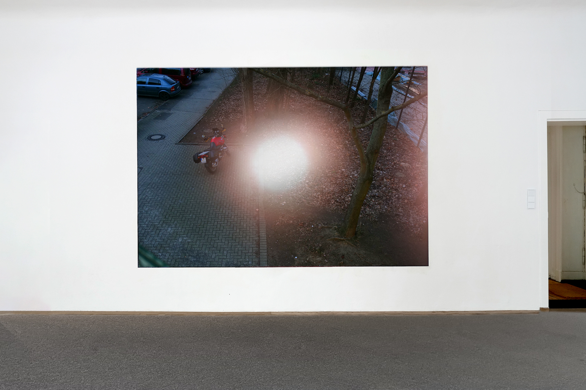
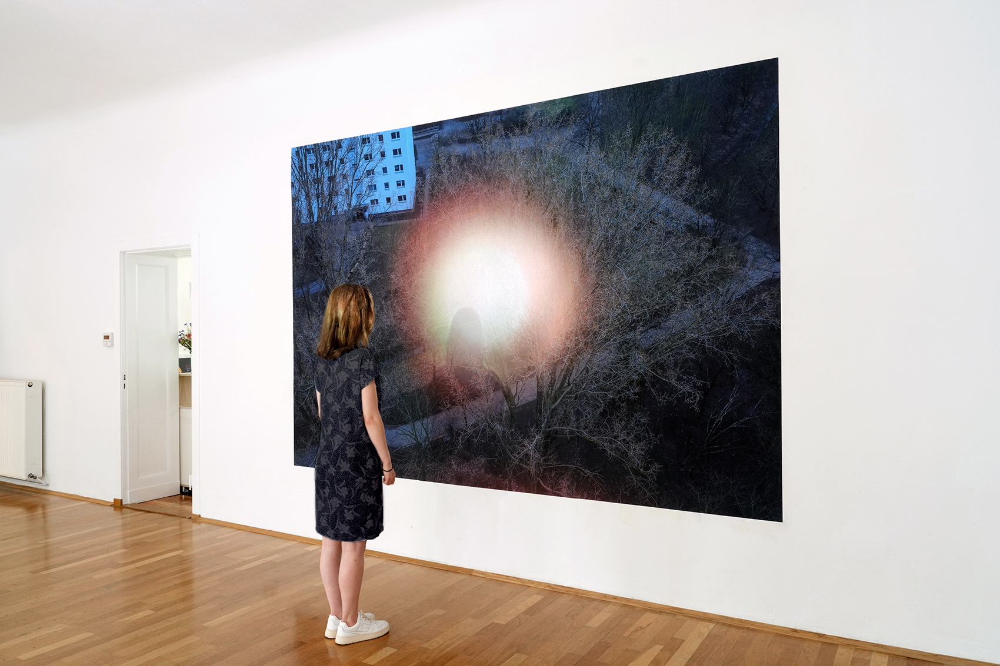

Stillness III (titre de travail du progrès en cours), 2025
Inkjet print on adhesive textile, pinspot LED
228 x 330 cm

Stillness, 2020
Impression au jet d'encre sur textile adhésif, LED à faisceau concentré
228 x 330 cm
Vue à l'exposition Power up, imaginaires techniques et utopies sociales, 2024, La Kunsthalle Mulhouse
« Stillness fait partie d'une série de travaux qui abordent l'effacement artificiel de la nuit et le phénomène d'insomnie qui en résulte. Dans un calme apparent, l'image entièrement centrée sur un point artificiel illuminé, présente un paysage urbain en état de veille. Elle affiche une fausse harmonie. Renvoie-t-elle au risque d'être endormi ? ou peut-être installe-t-elle un silence nécessaire avant toute mobilisation ? »
« Avec son installation Stillness, Jessica Arseneau interrompt cette prétendue harmonie et abondance énergétique en sonnant le rappel d'une réalité dystopique aux atmosphère fantomatiques. Dans sa photographie où tout est suspendu, dans un instant de conscience d'une nécessaire pause, elle introduit la seconde partie de l'exposition. »
- Textes extraits du pamphlet de l'exposition Power up, imaginaires texhniques et utopies sociales, La Kunsthalle Mulhouse

Stillness II, 2024
Impression au jet d'encre sur textile adhésif, LED à faisceau concentré
228 x 330 cm
Vues d'exposition, 48 Stunden Neukölln, promo promo studio, Berlin